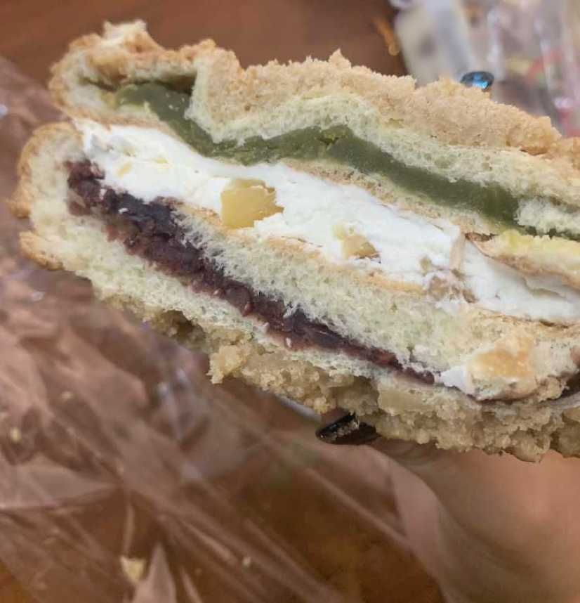

이거 처음 먹어봐요..
우유에 찍어먹으면 진짜 맛있을 것 같은 맛인데
우유가 너무 조금 남아서 아쉬웠다는..
이건 우유 한통있음 혼자서도 해치울 수 있는 맛인데
좀 달고 느끼하긴해요
집에 소고기 또 주신 게 있어가지구
어제 오늘 아침에 소고기 구워 먹었는데 아주 든든하구만
소고기 맨날 가족들이랑 언니들이 구워주는 거 먹다가
내가 구워먹으니까 또 어렵더라구요 ㅋㅋㅋㅋㅋ..
요리 바보.. 시간 좀 있을 때 요리 연습이나 해볼까바여
ㅋㅋㅋㅋㅋㅋㅋㅋ
그리고 오늘 난 손톱을 바꿀 것이다!!!!
이번엔 누드톤으로 얌전하게 가야지 ㅋㅋㅋㅋㅋㅋ
손톱 모양도 다시 네모로 예의 바르게 갑니당><